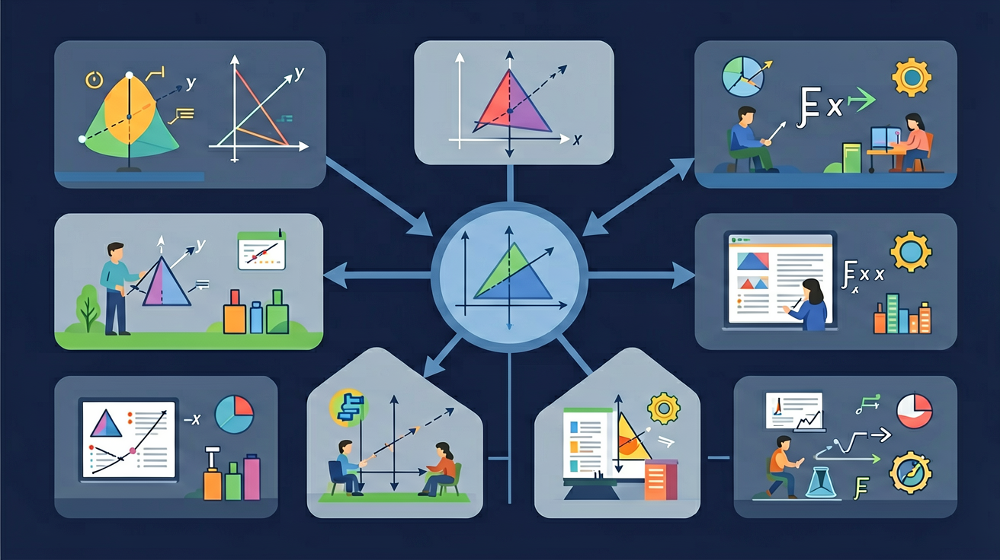

❓ 为什么温度计上有负数？
❓ 欠钱和负数有关系吗？
❓ 比赛得分可以是负数吗？
学完这一课，这些问题你都能自信地回答。
🎯 能说出负数在温度、债务中的实际意义
🎯 能判断两个负数的大小关系
🎯 能计算含负数的加减法应用题
走进负数的世界——零度以下的温度、地面以下的楼层

在学习新内容之前，先测测你的基础知识！
Q1：温度计上比0℃还冷的温度怎么表示？
Q2：正3和负3哪个大？
我们已经认识了正数，能表示很多事物（And），但温度零下5度、欠钱5元这些情况，正数无法表示（But），所以我们引入负数来表达比零还小的量！（Therefore）
负数在0的左边，正数在0的右边
完成学习后，用这两道题检验你的掌握程度！
Q1：-5和-3哪个小？
Q2：在数轴上，-2在哪里？
记忆口诀：正数在右，负数在左，零在中央。助记：温度计就是竖着的数轴，零度以下是负数，越往下越冷数越小。口诀：左小右大，零为界线，负号表示反方向。
⚠️ 如果你做错了，看看错在哪里：
如果你认为-5>-3（错！），你把"绝对值大小"和"数的大小"搞混了。-5的绝对值是5，确实比3大，但-5这个数比-3小，在数轴上更靠左。
💡 自查方法：把答案代回原题验证，如果算出矛盾就说明中间有错误！
💡 背后的原理
🔍 本质：负数是正数的"镜像"。数轴上0左边全是负数，越往左越小。负数解决了"比0还小"的计量需求——温度、海拔、财务都需要负数。
回忆：今天学了哪些关键词和规则？试着说出来。
用自己的话解释今天学的核心概念，不看书能说清楚吗？
用今天的知识解决一个实际问题，或写一个新例子。
把今天的知识与已有知识联系起来：有什么共同点？有什么区别？能不能自己创造一道新题？
比较负数大小时，记住两个原则：1）所有负数都小于零和正数；2）在负数中，绝对值大的数反而小。例如，-8 < -5，因为8比5大（绝对值），但-8比-5更靠左。实际例子：-10℃比-5℃更冷，地下3层（-3）比地下1层（-1）更深。常见错误是认为“数字越大数值越大”，这在负数比较时恰恰相反。可以通过温度计、电梯楼层等生活场景加深理解。练习：将-7, 0, -2, 3按从小到大排列，正确答案是-7, -2, 0, 3。
先独立作答，再点选项查看对错与错因。
滑雪场夜间-8℃比早晨-5℃的情况是
下列数轴表示正确的是
中午3℃比夜间-8℃高多少度？
全天最大温差是____℃
答案：11
最高3℃减去最低-8℃
在数轴上，-4位于-6的____边
答案：右
数轴右侧数值更大
关于负数比较，正确的是
记录一周温度与游客数量数据
✅ 比较绝对值，-5离0更远更小
💡 忽略数轴方向
✅ 保持符号参与运算
💡 符号意识薄弱
And：学生已会数轴上表示正数
But：零下温度怎么表示？
Therefore：引入负数表示相反意义的量
像-3、-1.5这样带减号的数叫负数，表示比0小的数。比如冰箱冷冻室显示-18℃，表示比0℃低18度。数轴上负数在0的左侧，-5比-2更靠左说明它更小。
🌍 冬天哈尔滨气温-25℃，比北京-5℃冷得多；电梯B2表示地下二层，都用负数。
下列哪个是负数？
And：知道正数大小比较
But：-8和-5谁更大？
Therefore：掌握负数比较的规则
负数比较时，不看负号后的数字大小，要看谁更接近0。比如-3℃和-10℃比，-3更大，因为-3离0更近（就像欠3元比欠10元压力小）。数轴上右边的数总比左边大。
🌍 珠穆朗玛峰海拔8848米，死海海拔-430米，两者相差9278米。
-12和-9哪个大？
And：会算正数加减
But：(-5)+3等于多少？
Therefore：理解数轴上的方向变化
加法是向右移动，减法是向左移动。比如(-4)+6：从-4出发向右跳6格到2；(-3)-5：从-3向左跳5格到-8。关键看最终在0的哪一侧。
🌍 小明零花钱-5元（欠5元），妈妈给他8元后变成+3元；潜水员从-10米上游4米到-6米。
(-7) + 10 = ?
And：掌握基本运算
But：如何解决实际问题？
Therefore：培养数学建模能力
把生活问题转化成算式：①确定基准（如海平面为0）②标出正负（山上为正，水下为负）③列式计算。例如：山峰+1500米，潜艇-300米，两者高度差是1500-(-300)=1800米。
🌍 股票涨跌：昨天收盘-2元，今天涨+5元，现价是(-2)+5=+3元。
白天温度5℃，夜间-4℃，温差是多少？